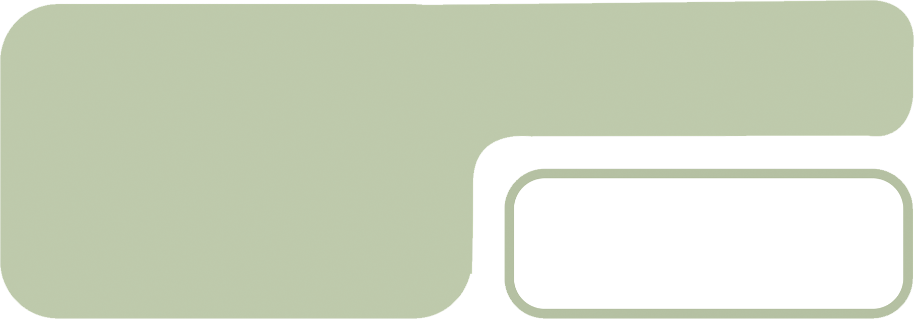

stadstuin
activiteiten voor
bedrijven
mijn stadstuin
Wil je even uit de werkstand met je bedrijf of team? Bij mijn Stadstuin kun je een super gezellig dagje uit besteden in de natuur. Je kan hier duurzame activiteiten met je team doen, maar als je verder wilt werken en toch nog een beetje mee wilt krijgen van de natuur, kan je een vergadering op de bijzondere buitenlocatie bij Mijn Stadstuin houden.
plant hier je eigen
moestuin
mijn stadstuin
Heb je altijd al een eigen moestuin willen maken en je eigen eten willen verplanten. Bij Mijn Stadstuin kan dat. Hier kan je een eigen moestuin huren en verschillende pakketten kopen. Het basispakket, het basis-plus pakket en het full-service pakket. Bij elk van deze drie pakketten krijg je verschillende soorten hulp. Kies de gene die het best bij jou past!
hun regeneratieve
projecten
mijn stadstuin
Bij Mijn Stadstuin werken ze ook aan eigen projecten. Zo hebben ze een groot voedselbos die goed mis voor het bewaar van water door de grote variatie in planten, bomen en gewassen. Ook werkt Mijn Stadstuin met het gebruik van compost, wat op meerdere gebieden goed is voor de natuur en beter is dan kunstmest.